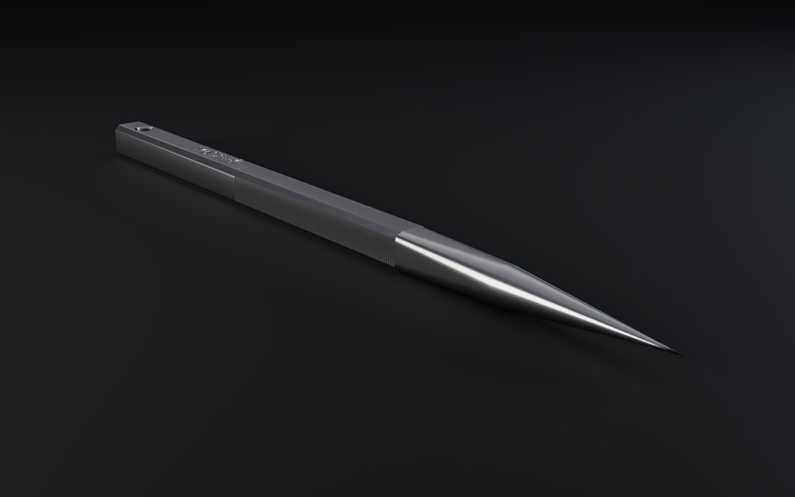
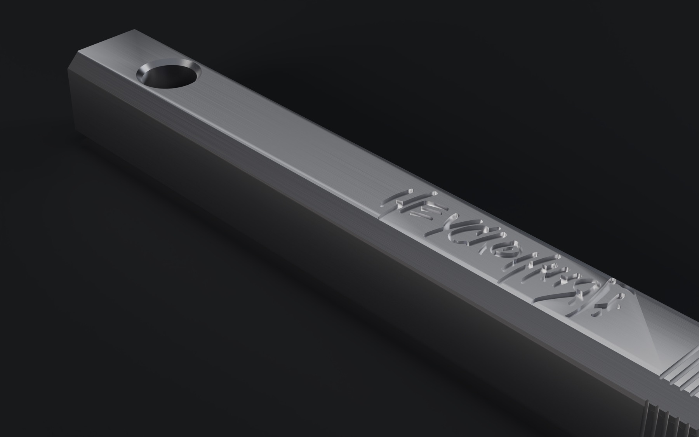
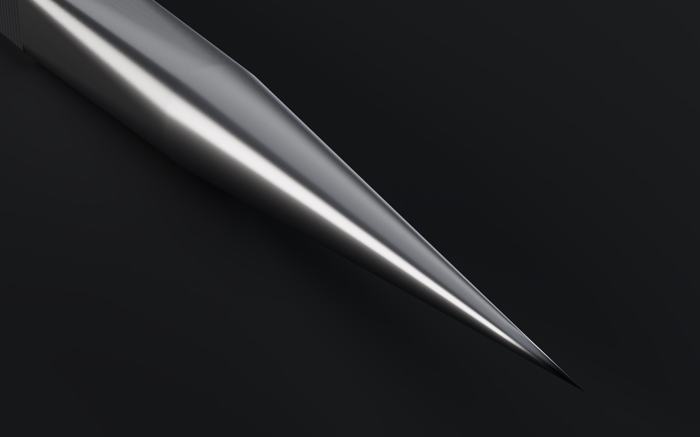
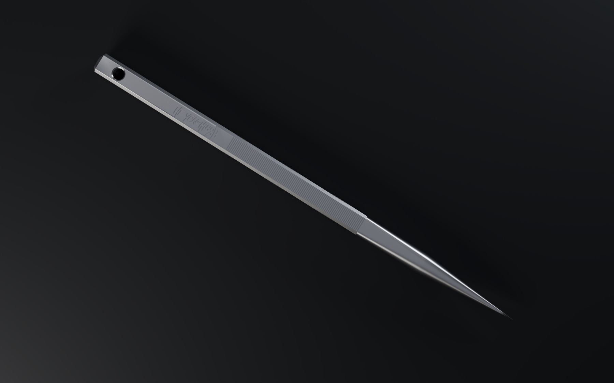
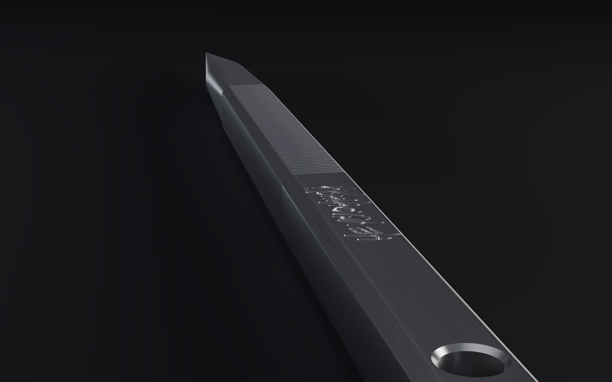

Инструмент для забивки чаши
135 мм нержавеющей стали. Квадрат 6×6 в руке, остриё под 11° в табаке. Без ручки, без сборки, без лишнего.
Забивка
Остриё входит в лист и раздвигает его, не рубя в кашу. Квадратный пруток держит усилие и не проворачивается в пальцах. Чаша остаётся ровной, тяга — собранной.
02 / остриё
Сведён из тела прутка на 30 мм. Входит в лист, раздвигает и выходит — без заусенца, без рывка.
03 / хват
85 канавок на каждой грани второй половины прутка — там, где пальцы сжимают инструмент при забивке.
04 / монолит
Ø 3,2 под шнур или кольцо, чтобы шило висело у кальяна. Фаска 0,9 на рёбрах: держит хват, не режет. «Не усложняй» — на грани.





Одна деталь. Одна операция для руки — взять и давить.
Напишите — скажем цену, срок и когда можно забрать. Ответим лично.